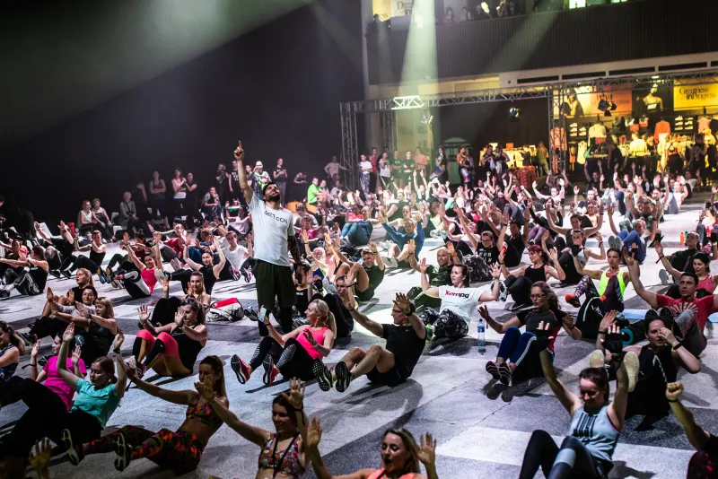

Holy Shred
Vijftig minuten HIIT in zes rondes: intervallen op de loopband afgewisseld met gewichten op de vloer. Drie varianten per week: upper body, lower body en full body.
- Tot 1.000 kcal in één les, volgens Saints & Stars
- Elke dag een andere workout
- In City, West en South